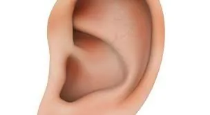
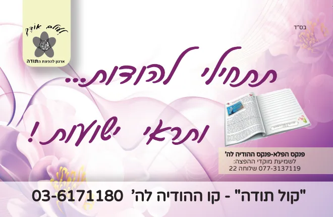
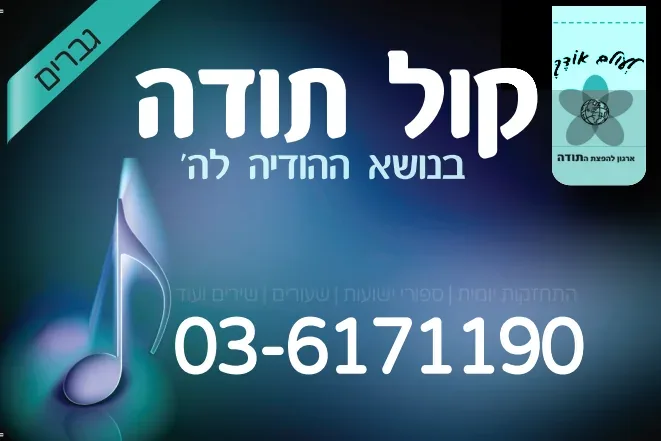
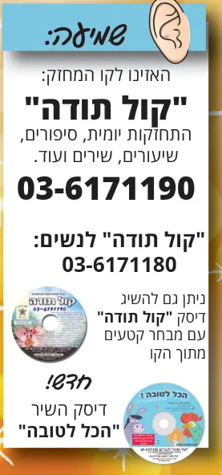

שמיעת הקו המחזק - קו קול תודה - ההודיה לה'
הסיפור שמאחורי הקו - ממודעה בעיתון לארגון ארצי
לראות עד כמה ידו הרחומה של הקב''ה מעוררת את בית ישראל, להרגיש את המתיקות הנפלאה של ההודיה, נביא את המעשה שבעקבותיו קם הארגון הנפלא "לעולם אודך – קול תודה.
היה זה בשנת תשע''ב, פרסמו מודעה בעיתון על ידי יהודים שהרגישו צורך נפשי להודות לה' יתברך, לא יתכן וכל הזמן רק נבקש ונהיה מרוכזים בכל מה שאין לנו אמרו, ברוך ה' יש כל כך הרבה דברים טובים מסביבנו וחיבים להודות לה' יתברך עליהם. בעקבות מודעה קטנה זו התקשרו מאות מאות יהודים ששאלו כיצד מודים לה' על מה מודים וכ''ו וכך קם ארגון עולמי בנושא ההודיה.
בתחילה הוקם הארגון אצל נשות ישראל שהצטרפו בשמחה עצומה ליוזמה הנפלאה, להקדיש כל יום לפחות דקה אחת להתבונן בחסדי ה' ולהודות עליהם במילים שלנו.
***
עם הצטרפותן של מאות נשים לארגון ההודיה "קול תודה", הוחלט בארגון להקים קו טלפון של שיעורי התחזקות בנושא ההודיה, הארגון פנה לארגון הנפלא "קול הלשון" וקיבל בשמחה אפשרות להקים קו טלפון בתוך קול הלשון עם מספר מיוחד לארגון ההודיה.
הקו נקרא קו "קול תודה" על שם הפסוק בתהלים (כו, ז) לַשְׁמִעַ בְּקוֹל תּוֹדָה וּלְסַפֵּר כָּל נִפְלְאוֹתֶיךָ.
בכל יום רבנית אחרית מוסרת שיעור קצר בנושא ההודיה, וב''ה שיעורים אלו מחזקים מאוד את נשות ישראל העסוקות מאוד בעבודה בבית ומחוץ לבית, אך לכמה דקות ביום של טל תחיה על נפש עייפה מוצאות אלפי נשים זמן בכל יום, ומאז פיהן לא פוסק מלהודות ולהלל את בורא העולם על הקו הנפלא שהקים להם.
קו הטלפון לנשים הוא: 03-6171180 בקו זה יש שיעורים יומיים בעברית, אנגלית, אידיש וצרפתית.

בהמשך הוסיפו נדבך לקו, את המשך הפסוק "ולספר כל נפלאותיך", לספר את חסדי ה' בפני רבים ככתוב "בתוך רבים אהללנו". כך הוקם קו סיפורי ישועות בו מספרים נסים ונפלאות שארעו בעקבות ההודיה לה'.
סיפורי הישועות היו לקרן אור נפלאה להרבה יהודים במצוקה, להאמין שוודאי הקב''ה יעזור לנו בכל מצב, הסיפורים נתנו כוח להודות גם במצבים של קושי, להאמין ולהמשיך לחייך גם שצרה ויגון אמצא.
***
בראשית שנת תשע''ו הגיע ביקוש גם מצד הגברים להקמת קו טלפון בנושא ההודיה לה', וב''ה רבים רבים התחזקו מקו נפלא זה על חשיבות ההודיה לה', ראיית חסדי ה' הסובבים אותנו יום יום, מעלת סיפור חסדי ה', שמחת חיים ושמחה בעבודת ה'.
הקו התרחב והתרחב וב''ה היום בכל יום יש רב אחר שמעביר חיזוק יומי בקו, כמו כן יש בו אוסף שיעורים רבים ונפלאים מרבנים חשובים בנושא ההודיה,

בשנת התשע"ז הורחבה פעילות קו ההודיה גם לאנגלית, ב''ה מצאנו רבנים שידם רב להם בנושא ההודיה והם הסכימו למסור שיעור חיזוק יומי, במדור התחזקות יומית.
הרב סימון שליט''א תלמידו של הרב הגאון ר' אביגדור מילר זצ''ל שזכה לתרגם חלק מספריו לעברית עם סגולה ועוד, וכן כתב את שיחותיו ב10 ספרים בעברית בשם אור עולם.
הרב דניאל טרביס שליט''א שזכה להוציא לאור ספר מזמור לתודה, ספר חשוב על ההודיה לה' - אוסף נפלא מגדולי ישראל בנושא ההודיה. הרב מוסר שיעור יומי קצר (2-3 דקות) בנושא גם זו לטובה.
הטלפון של קול קול תודה הוא 03-6171190 לאנגלית יש להקיש 2
***
אנא זקוקים לעזרתכם להפיץ את אור ההודיה לה' בארץ ובעולם כולו, ב''ה גם בבתי כלא רוצים להודות, גם חולים במחלות שונות רוצים להודות, וצריך להאיר לכולם את האור הנפלא של ההודיה - שמכניס שמחה אהבת ה' עצומה ורואים בחוש ניסים ונפלאות עצומים בזכות ההודיה.
יהודי אחד שזכה לראות נס עצום בזכות ההודיה כתב לנו במכתב "אני חושב שהארגון הזה "קול תודה" עוסק ממש בהחייאת נפשות. זה דבר שמציל חיים של אנשים ממש כמו כל ארגוני החירום לשעות מצוקה, וחשוב שהציבור יידע זאת. תודה רבה לכם!"
***
אנא עזרו לנו "להגדיל תודה ולהאדירה" -
